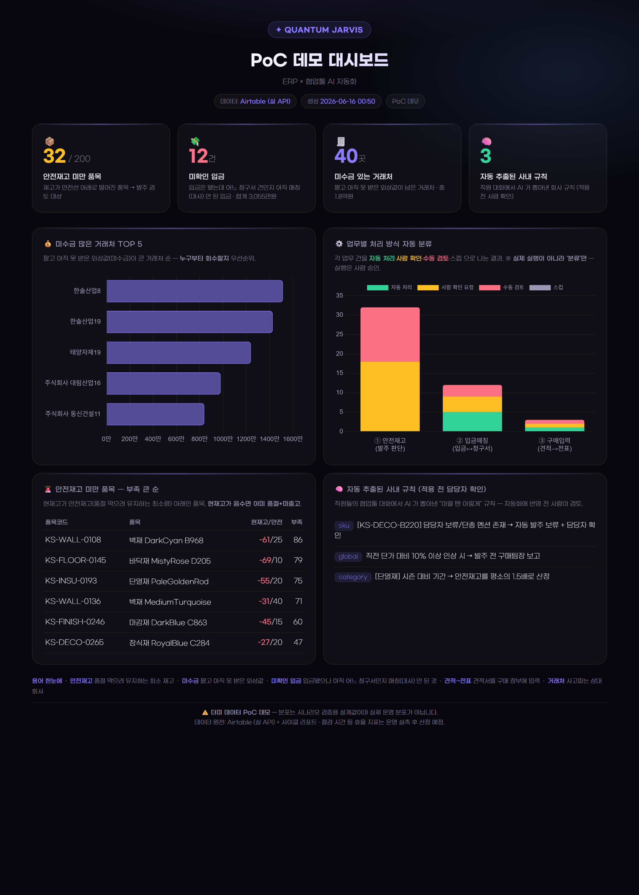
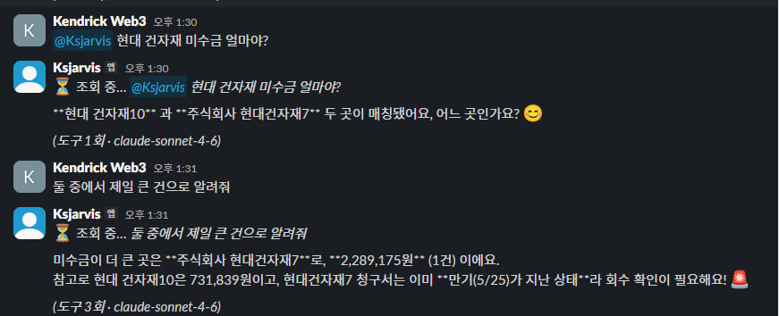
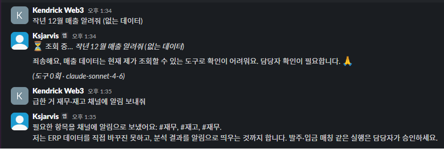
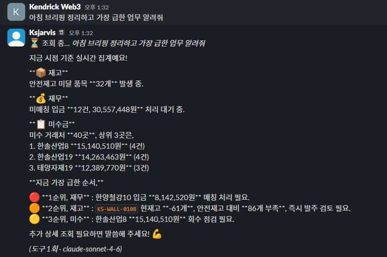
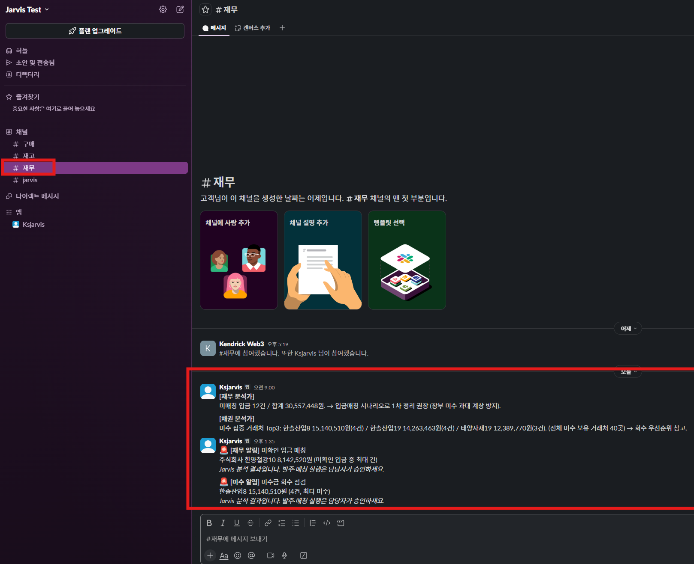

KS International이 만들려는 'AI 기반 사내 자동화 + 대화형 에이전트'를, 가상의 건축자재 회사 데이터로 PoC를 만들어봤습니다. 코드와 에이전트를 일에 맞게 나누고, Prompt·Context·Harness 엔지니어링으로 설계해 실제 API에 연동했습니다.
무엇을 만들었는지 네 가지로 정리했습니다.
Slack 같은 협업툴에서 "현대건자재 미수금?" 하고 물으면, ERP를 조회해 답합니다. 앞의 대화 맥락들을 기억하고, 모르는 건 지어내지 않습니다.
반복 업무 중에서 자동화가 가능한 시나리오를 골라 구현했습니다. 안전재고 발주 추천, 미확인 입금 매칭, 견적서 텍스트에서 품목·단가를 뽑아 구매전표 초안 만들기. 최종 실행 권한은 사람에게 있습니다.
순서가 정해진 일은 코드로 자동 처리하고(workflow), 무슨 질문이 올지 모르는 영역은 AI가 스스로 도구를 골라 쓰게 하고(agent), 여러 부서를 한 번에 보는 분석은 분석가 여럿을 동시에 돌렸습니다(multi-agent).
원래는 이카운트 ERP와 Flow로 구현하려 했지만, 데모 단계라 만들 수 있는 범위에 한계가 있었습니다. 그래서 무료로 쓸 수 있는 Airtable을 ERP 대신, Slack을 Flow 협업툴 대신 연결해, 같은 구조를 실제 API로 구현했습니다.

전 과정 가상의 데이터로 구현했습니다.
AI의 가장 큰 약점은 모르는 것도 그럴듯하게 지어내는 환각(hallucination)입니다. Jarvis는 하네스 엔지니어링으로 이걸 막았습니다. 데이터를 조회하는 읽기 전용 도구만 주고, 답은 반드시 실제 조회 결과에 근거하게 하고, 도구로 확인되지 않으면 지어내지 말고 모른다고 답하도록 시스템 프롬프트에 규칙을 넣었습니다.


발주나 입금 매칭처럼 데이터를 직접 바꾸어야 하는 부분은 사람이 직접 승인해야 하기에, 데이터를 바꾸는 도구 자체를 넣진 않았습니다. 실제로 처리할 때는 Ksjarvis가 보내준 내용을 기반으로 사람이 승인하고 결정합니다.
재고·재무·미수를 각각 보는 분석가 셋이 병렬로 돌아 현황을 만들고, 팀별 채널로 자동 발송됩니다. 매일 오전 9시에 자동으로 올라올 수 있도록 서버에 예약 작업(cron)을 걸어 뒀습니다.


가상자산 투자와 마케팅 프리랜서를 하면서, 시세 모니터링·차익(아비트라지) 탐색·온체인 데이터 수집·알림, 리서치 제작 등 매번 손이 가던 일들을 자동화했습니다. 2026년 1월부터 시작하여 지금까지 총 19개의 프로젝트를 진행했습니다.
이 외에도 미션 자동화, 온체인 이상거래 감지, 차익거래 모니터링, 브라우저 자동화 등 총 19개의 프로젝트를 진행했습니다.
2023.07 ~ 2024.07 · 1년 1개월 · 정규직
2021.10 ~ (메타플라이어 재직기 포함 병행) · 콘텐츠 / 커뮤니티
자동화에 항상 관심이 많아 제 일과 투자를 직접 자동화해 왔고, 이번 PoC도 그 연장선에서 만들게 되었습니다. 만약 KS에 입사하게 되면 이 PoC를 실제 이카운트·Flow로 이관하는 것부터 시작해, AI를 활용하여 한 조직의 자동화를 효율성 있게 만들어 내보고 싶습니다. KS와 제가 함께 성장할 수 있는 좋은 기회가 닿기를 기대합니다.